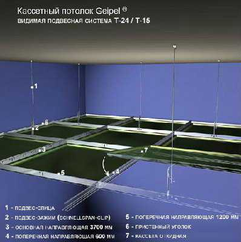

Подвесные потолки «Geipel»
Один из видов подвесных потолков — кассетный потолок. Потолки этого типа производства фирмы Geipel — удачное сочетание функциональности, качества и красоты. Они обладают всеми необходимыми характеристиками, в том числе, влагостойкостью и пожаробезопасностью, а кроме того, выглядят стильно и современно. Среди кассетных потолков выделяются потолки с зеркальным покрытием, с помощью которых можно зрительно увеличить объем комнаты, при этом такие потолки подходят для влажной уборки и безопасны для здоровья. Установить зеркальный потолок можно в помещении любого типа, будь то жилой дом или же офисное здание, учреждение медицинского или учебного назначения.
Модульная конструкция потолка Geipel предполагает легкий и удобный монтаж даже в помещениях с большой площадью потолков, и, что особенно важно, простую замену потолка без замены самой системы — например, если кассеты получили какие-то повреждения. Естественно, это позволит избежать лишних расходов
Как выглядит кассетный потолок Geipel?
Каждая кассета – это панель из алюминия или оцинкованной стали, имеющая квадратную форму. Не смотря на то, что возможен заказ кассет практически любого цвета, стандартные цветовые решения – это белый, зеркальные серебряный и золотой, серебряный «метталик». Покрытие кассет осуществляется с помощью качественных красок, стойкость которых перед влажной или другой агрессивной средой позволяет им длительное время оставаться в прекрасном состоянии. Надежные материалы способны выдерживать монтаж и демонтаж неоднократно, сохраняя при этом свой первоначальный вид. Возможны также дополнительные характеристики кассет для помещений с особыми требованиями, например, повышенная вентиляционная способность достигается с помощью перфорации, а для улучшения акустики применяется минеральное стекловолокно. Также по желанию заказчика в кассетах могут присутствовать вырезы различных форм для специального оборудования – труб, светильников, громкоговорителей и пр.
Виды перфораций кассетного потолка
- Стандартная перфорация
- Назначение в соответствии с DIN: Rg 0,70 - 5,00
- Вид: отверстия 0702
- Диаметр отверстия: 0,7
- Расстояние: 5
- Отверстия: радиальные, линейное расположение
- Свободное пространство: 1,54%
- Назначение в соответствии с DIN: Rg 1,50 - 4,00
- Вид: отверстия 1511
- Диаметр отверстия: 1,5
- Расстояние: 4
- Отверстия: радиальные, линейное расположение
- Свободное пространство: 11,0%
- Назначение в соответствии с DIN: Rd 1,50 - 2,83
- Вид: отверстия 1522
- Диаметр отверстия: 1,5
- Расстояние: 2,83
- Отверстия: диагональное расположение
- Свободное пространство: 22%
- Назначение в соответствии с DIN: Rd 1,80 - 3,52
- Вид: отверстия 1821
- Диаметр отверстия: 1,8
- Расстояние: 3,52
- Отверстия: радиальные, диагональное расположение
- Свободное пространство: 20,77%
- Назначение в соответствии с DIN: Rg 2,00 - 6,00
- Вид: отверстия 2009
- Диаметр отверстия: 2
- Расстояние: 6
- Отверстия: радиальные, линейное расположение
- Свободное пространство: 8,7 %

|
|

|
|

|
|

|
|

|
|
Преимущества кассетного потолка Geipel
Уровень качества
Для производства подвесных кассетных потолков Geipel используют высококачественные металлы – оцинкованную сталь и алюминий.
Толщину металла, которая обеспечит наилучшие эксплуатационные свойства кассетных потолков, определяют с помощью сложных инженерных расчетов.
Поверхности кассет в процессе изготовления придается идеальная гладкость, что делает потолок особенно функциональным и, конечно, стильным и красивым.
Прочность и надежность
- Для производства кассет Geipel используется металл, защищенный от коррозии и способный выдерживать воздействия агрессивной среды, поэтому потолки Geipel служат на протяжении многих лет.
- Цвет кассет сохраняется в течение всего срока эксплуатации, т.к. порошковое покрытие, которое наносят на них, устойчиво к повреждениям и воздействию ультрафиолетовых лучей.
- Кассеты Geipel с белым покрытием способны снижать энергозатраты за счет того, что их поверхность может рассеивать и отражать свет, становясь дополнительным источником света.